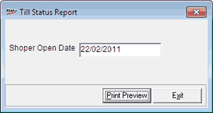

The Till Status report gives information on the status of all the shifts recorded for the current Shoper date, at any point of time.
How to reach: Reports > Cash > Till Status Report
The Till Status Report window is displayed.

Shoper Open Date: By default, the current Shoper date is selected.